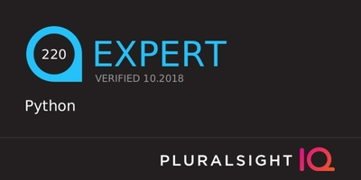
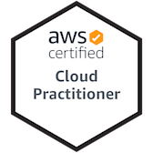

This pdf has been generated from my online cv. Email me.
Software and DevOps Engineer with experience as a part of an Agile team, strong soft skills and a first class Computer Science degree.
Key Skills and Technologies


Experience
Engineer - Roke
September 2019 - Present
Work as a Software and DevOps engineer on mostly AWS projects. Work has included:
- Building a large scale (1000s of resources) testbed in AWS to test mobile applications across VPCs, using Terraform and Ansible.
- Terraform implementation of multiple serverless architectures in AWS, using API Gateway, lambdas, SQS, SNS, SES, DynamoDB and other AWS Services.
- Leveraging AWS machine learning capability for sentiment analysis of text with emojis using Comprehend, and image recognition of live video feeds with Rekognition.
- Applying security best practices, as well as logging and monitoring functionality across all work using CloudWatch and CloudTrail.
Graduate Engineer - Roke
September 2017 - September 2019
A 2 year graduate role, which involved a steep learning curve in order to make significant contributions on projects including:
- A cyber project, involving development in Go, a Django RESTful API and an Angular interface.
- A python forensics project that makes use of The Sleuth Kit and the Elastic stack to gain insights on a collection of harddrives.
Software Industrial Trainee - Lockheed Martin
July 2015 - August 2017
Work on enterprise Java development as part of an Agile software team. Subsequent work included creation of in house applications for project management and infrastructure teams, that continued into the final year of University and formed part of a final year project.
Education
University
September 2013 - 2017
Bsc (Hons) Computer Science - University of Portsmouth - 1st Class
Interests